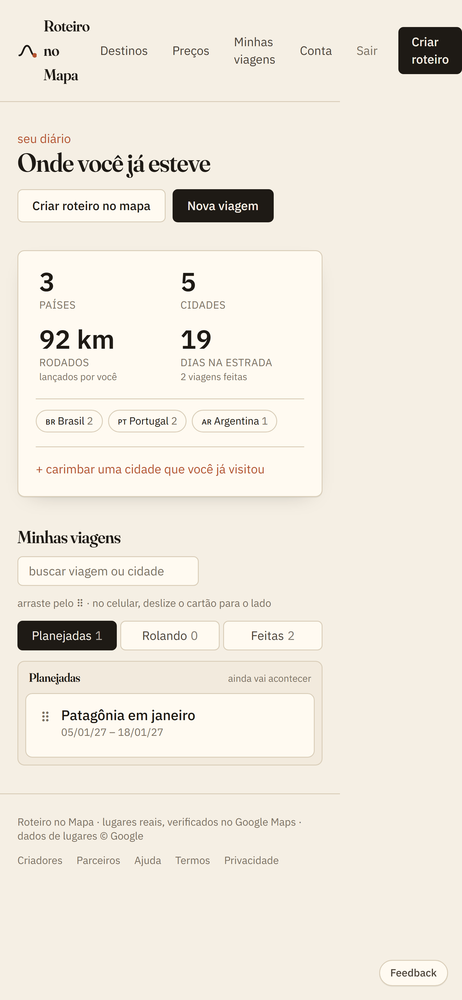

protótipo em construção · nada aqui é definitivo
Um roteiro de verdade, no mapa, que se reorganiza sozinho
Você diz para onde vai, quantos dias e como gosta de viajar. Sai um roteiro dia a dia com lugares que existem — cada parada conferida no Google Maps, com horário e caminhada medida. Tirou uma parada? O dia inteiro se refaz em menos de um segundo.
O dia inteiro, na ordem certa
O motor agrupa as paradas por região, resolve a ordem, encaixa as refeições e confere se cada lugar está aberto na hora em que você chega. A lista e o mapa são a mesma coisa: passe o mouse numa parada e o marcador acende.
- Remover sugere uma substituta da mesma região.
- Travar segura a parada no lugar quando o resto se reorganiza.
- Arrastar muda a ordem — e agora também no celular, com o dedo.
- Plano B de chuva troca o que é ao ar livre por museu, café ou compras por perto.


Viagem é coisa de grupo
Um link só por viagem, o mesmo para qualquer pessoa, sem prazo. Quem abrir entra e já edita junto — a tela de todo mundo se atualiza sozinha.
- Conversa do grupo dentro da viagem, com contador de não lidas.
- Sugestões com voto: quem só lê também sugere; quem organiza decide.
- "Posto por Ana" em cada parada, com uma cor por pessoa no mapa.
- Chamar no WhatsApp com um toque — é o mesmo link.
E depois: o diário
O app também guarda a sua vida de viagem. O passaporte conta países, cidades, km rodados e dias na estrada — contando só o que já aconteceu. O que está planejado fica de lado, sem inflar o número.
- Quadro em três colunas: planejadas, rolando, feitas.
- Roteiros criados no app entram sozinhos, com cidades e km já calculados.
- Viagem de carro de 2015? Cria à mão e carimba as cidades.
- Busca por nome, cidade ou país — sem precisar de acento.


Um caderno por viagem, tipo Notion
Uma lista só, arrastável, com blocos de tipos diferentes — e tudo preenchível: hotel, avião, ônibus, trem, carro, moto, barco, monumento, restaurante, ingresso, gasto, tarefa, anotação, link.
- Um bloco de título vira seção: dobra o dia inteiro com um clique.
- Os blocos de transporte carregam os km, que sobem para o passaporte.
- Os que têm valor somam o gasto da viagem.
- Arrasta pela pega, no dedo ou no mouse; desliza para o lado para remover.
Feito para o celular
É onde a viagem acontece. No celular o quadro mostra uma coluna por vez e o cartão anda com o dedo; o roteiro pago fica guardado no aparelho e abre sem internet, com a imagem do dia.
Dá para instalar como app (PWA) e existe também o embrulho para Android e iOS.

O que já está pronto
O motor
Agrupa por região, ordena, encaixa horários, mede caminhadas e refaz só o dia que você mexeu. Coberto por 69 testes.
A conta
Entrar com Google ou por link no e-mail, amostra grátis do dia 1, Pix para liberar o resto, reembolso em 7 dias, exportar e apagar seus dados.
O grupo
Link único, edição junto, sugestões com voto, conversa e "quem colocou cada parada".
O diário
Passaporte, quadro arrastável e caderno preenchível por viagem.
Offline e app
O roteiro pago abre sem internet, com imagem por dia. Instalável no celular.
O que falta
Chaves do Google Maps e do LLM, conta de pagamento, domínio e o primeiro deploy. O código está pronto e testado.
Dá para brincar agora
A demo do diário roda inteira no seu navegador. Arraste os cartões, deslize no celular, abra um caderno e preencha um trecho — os km sobem no passaporte na hora.
Abrir a demo